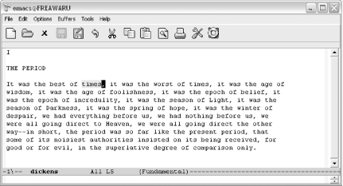
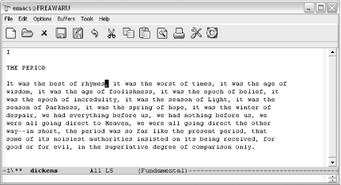
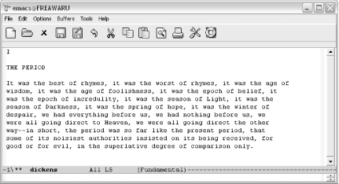

{% include JB/setup %}
{% raw %}
<div>
<div class="book" xml:lang="en"><div class="book"><div class="book"><div class="book"><h1 class="title"><a id="gnu3-CHP-13-SECT-3" class="calibre1"></a>Emacs and Windows</h1></div></div></div><p class="copyright">You can also download and install Emacs 21.3 for the various Windows
platforms (Win95, Win98, Win2K, WinXP, and so on). As most Windows
machines do not ship with the tools required to build Emacs from
scratch, we'll look at downloading and installing
prebuilt executables.<sup class="calibre6">[<a id="gnu3-CHP-13-FNOTE-7" href="#ftn.gnu3-CHP-13-FNOTE-7" class="calibre2">7</a>]</sup>
         </p><div class="book" xml:lang="en"><div class="book"><div class="book"><div class="book"><h2 class="title1"><a id="gnu3-CHP-13-SECT-3.1" class="calibre1"></a>Installing Emacs</h2></div></div></div><p class="copyright">As with all platforms, you
<a id="gnu3-CHP-13-ITERM-2961" class="calibre2"></a>
               <a id="gnu3-CHP-13-ITERM-2962" class="calibre2"></a>
               <a id="gnu3-CHP-13-ITERM-2963" class="calibre2"></a>have choices when installing Emacs
on Windows. You can install a binary hosted by the FSF (likely to be
older, but certainly stable). You can find a more recent binary
online (we'll point you to the one we prefer). You
could also build Emacs from CVS, but if you're doing
that on Windows, chances are you are not reading this book. Windows
comes with no default compilers.</p><div class="book" xml:lang="en"><div class="book"><div class="book"><div class="book"><h3 class="title4"><a id="gnu3-CHP-13-SECT-3.1.1" class="calibre1"></a>Installing the latest binaries: Nqmacs</h3></div></div></div><p class="copyright">Our source for the latest binaries is
<a id="gnu3-CHP-13-ITERM-2964" class="calibre2"></a>Nqmacs (<a class="calibre2" href="http://sourceforge.net/projects/nqmacs/">http://sourceforge.net/projects/nqmacs/</a>).
This is simply a build of the latest version of GNU Emacs from CVS
sources, not a separate version of Emacs as the name may imply.
Windows binaries are posted here on a regular basis, giving Windows
users access to the latest version without having to build it
themselves.</p><p class="copyright">To install on Windows, simply download the latest binaries, unpack
into a new folder using WinZip or Windows own decompression
utilities, go to the <span><em class="calibre7">bin</em></span> subfolder and
double-click on <span><em class="calibre7">runemacs.exe</em></span>. By right-clicking
on the icon, you can send a copy of the icon to the desktop.</p></div><div class="book" xml:lang="en"><div class="book"><div class="book"><div class="book"><h3 class="title4"><a id="gnu3-CHP-13-SECT-3.1.2" class="calibre1"></a>Installing Emacs from the FSF</h3></div></div></div><p class="copyright">As we mentioned, the binaries
<a id="gnu3-CHP-13-ITERM-2965" class="calibre2"></a>
                  <a id="gnu3-CHP-13-ITERM-2966" class="calibre2"></a>
                  <a id="gnu3-CHP-13-ITERM-2967" class="calibre2"></a>at the FSF are stable but
generally older. For example, at this writing, the Nqmacs site
provides binaries built on 7/25/04 while the FSF's
site provides binaries from 3/10/2004.</p><p class="copyright">To download Emacs from the FSF, simply point your browser at
<a class="calibre2" href="http://ftp.gnu.org/pub/gnu/emacs/">http://ftp.gnu.org/pub/gnu/emacs/</a>. Scroll
down to find the <span><em class="calibre7">windows</em></span> folder. In there, you
should find several downloads. The binaries come in three flavors:</p><div class="book"><ul class="itemizedlist"><li class="listitem"><p class="copyright">
                        <span><strong class="calibre5">bare</strong></span> (barebin)—the bare
minimum you need to get going</p></li><li class="listitem"><p class="copyright">
                        <span><strong class="calibre5">standard</strong></span> (bin)—what most folks
need to get running</p></li><li class="listitem"><p class="copyright">
                        <span><strong class="calibre5">full</strong></span> (fullbin)—the full meal
deal; everything and then some</p></li></ul></div><p class="copyright">Grab the one you want and download it. You can use WinZip
(<a class="calibre2" href="http://www.winzip.com">http://www.winzip.com</a>) to unpack
it. If you have the Cygwin utilities installed, you can also use
<span><strong class="calibre5">gunzip</strong></span> and <span><strong class="calibre5">tar</strong></span> as we discussed in the Unix installation
section.</p><div class="warning"><h3 class="title6"><a id="gnu3-CHP-13-NOTE-21" class="calibre1"></a>Warning</h3><p class="calibre35">Be careful! The <span><em class="calibre7">README.W32</em></span> file notes that you
may run into some small problems if you unpack your Emacs
distribution into a path where one or more of the directory names
contains spaces. For example, don't unpack Emacs in
the <span><em class="calibre7">Program Files</em></span> directory. If you
don't like adding things directly to your C: drive,
create an <span><em class="calibre7">Applications</em></span> folder or something
similar and unpack Emacs in that folder.</p></div><p class="copyright">After that's unpacked, you're 99
percent of the way there. The latest versions of Emacs need nothing
else, actually; you just double-click on <span><em class="calibre7">runemacs.exe</em></span>
(in the bin directory of your Emacs folder) and off you
go! If you like, you can create shortcuts in your Start menu or on
the desktop. Just point them at <span><em class="calibre7">runemacs.exe</em></span> and
you should be set.</p></div></div><div class="book" xml:lang="en"><div class="book"><div class="book"><div class="book"><h2 class="title1"><a id="gnu3-CHP-13-SECT-3.2" class="calibre1"></a>Where to Put Your .emacs File</h2></div></div></div><p class="copyright">Probably the single biggest Windows <a id="gnu3-CHP-13-ITERM-2968" class="calibre2"></a>consideration
is the location of the <span><em class="calibre7">.emacs</em></span> file. This file
goes in your "home" directory. We
use quotes there because the Windows world doesn't
have a strictly defined home directory the way some other operating
systems like Unix and Mac OS X do. By default, Emacs assumes that the
<span><em class="calibre7">C:\</em></span> folder is your home directory. You can put
your <span><em class="calibre7">.emacs</em></span> file there, but you can also modify
your home directory using the Windows environment variable called
HOME. To change this environment variable on Windows XP, select
System from the Control Panel. A System Properties window displays.
Choose the Advanced tab, then choose Environment Variables. HOME is
probably not listed; click on New, then type HOME and the path to
your desired home directory. Emacs will now look for the
<span><em class="calibre7">.emacs</em></span> file in this directory.</p><p class="copyright">Because of naming compatibility issues, older Windows versions of
Emacs used the <span><em class="calibre7">_emacs</em></span> file rather than the
<span><em class="calibre7">.emacs</em></span> file for customization and configuration.
This file is still a valid option. However, if both
<span><em class="calibre7">_emacs</em></span> and <span><em class="calibre7">.emacs</em></span> are found
in the home directory, only <span><em class="calibre7">.emacs</em></span> is used.</p></div><div class="book" xml:lang="en"><div class="book"><div class="book"><div class="book"><h2 class="title1"><a id="gnu3-CHP-13-SECT-3.3" class="calibre1"></a>Starting Emacs from the Command Line</h2></div></div></div><p class="copyright">The Emacs <span><em class="calibre7">bin</em></span> folder includes two related
<a id="gnu3-CHP-13-ITERM-2969" class="calibre2"></a>
               <a id="gnu3-CHP-13-ITERM-2970" class="calibre2"></a>
               <a id="gnu3-CHP-13-ITERM-2971" class="calibre2"></a>files,
each sporting a Gnu icon: <span><em class="calibre7">emacs.exe</em></span> and
<span><em class="calibre7">runemacs.exe</em></span>. Typically you'll
use <span><em class="calibre7">runemacs.exe</em></span>; this runs Emacs graphically
without opening a console window. The other file,
<span><em class="calibre7">emacs.exe</em></span>, can be used to run Emacs from the
command line as described next.</p><p class="copyright">To run Emacs from the command line, <span><strong class="calibre5">cd</strong></span> to the directory where you installed Emacs
and type <span><strong class="calibre5">emacs -nw</strong></span> (or whatever
command-line argument you wanted to use; <span><strong class="calibre5">-nw</strong></span> runs Emacs in the console window). You can
also do this by choosing Start<span>→</span> Run, then selecting Browse
to locate <span><em class="calibre7">emacs.exe</em></span>. Add any command-line
arguments you wish, and then click <span><strong class="calibre5">OK</strong></span> to invoke Emacs using these arguments.</p></div><div class="book" xml:lang="en"><div class="book"><div class="book"><div class="book"><h2 class="title1"><a id="gnu3-CHP-13-SECT-3.4" class="calibre1"></a>Making Emacs Act like Windows: CUA Mode</h2></div></div></div><p class="copyright">CUA stands for common
<a id="gnu3-CHP-13-ITERM-2972" class="calibre2"></a>
               <a id="gnu3-CHP-13-ITERM-2973" class="calibre2"></a>
               <a id="gnu3-CHP-13-ITERM-2974" class="calibre2"></a>user
access, a standard originally developed by IBM. CUA mandates that
certain keys should always perform certain functions. In Windows, for
example, <span><strong class="calibre5">C-c</strong></span> copies and <span><strong class="calibre5">C-v</strong></span> pastes from one application to another. As
you know, Emacs uses these key bindings for its own purposes.</p><p class="copyright">That's where Kim Storm's CUA mode
comes in. This mode was so popular that it is now part of
Emacs.<sup class="calibre6">[<a id="gnu3-CHP-13-FNOTE-8" href="#ftn.gnu3-CHP-13-FNOTE-8" class="calibre2">8</a>]</sup> It allows standard Windows key
bindings, like <span><strong class="calibre5">C-x</strong></span> for cut and
<span><strong class="calibre5">C-v</strong></span> for paste, to work properly
within Emacs. It's quite clever—these keys cut
and paste only when an active selection exists. That leaves the
normal functionality of multistroke commands like <span><strong class="calibre5">C-c C-f</strong></span> in fine shape.</p><p class="copyright">To turn on CUA mode, select C-x/C-c/C-v cut-and-paste (CUA) from the
Options menu. If you decide you want to use CUA mode for multiple
sessions, select Save Options to have Custom (discussed in <a class="calibre2" href="ch10.html" title="Chapter 10. Customizing Emacs">Chapter 10</a>) automatically add it to your
<span><em class="calibre7">.emacs</em></span> file.</p><p class="copyright">As you can see from the option name, in this mode, <span><strong class="calibre5">C-x</strong></span> is used for cutting text, <span><strong class="calibre5">C-c</strong></span> is used for copying text, and <span><strong class="calibre5">C-v</strong></span> is used for pasting text. What is not so
apparent is that <span><strong class="calibre5">C-z</strong></span> runs undo
rather than minimizing the window (in CUA mode, you can minimize
using <span><strong class="calibre5">C-x C-z</strong></span>).</p><p class="copyright">What if you're used to confirming a region before
you cut it using <span><strong class="calibre5">C-x C-x</strong></span>? You can
type <span><strong class="calibre5">C-c C-x C-x</strong></span> in this case. This
works in part because <span><strong class="calibre5">C-c</strong></span> cancels
the active region. Remember that <span><strong class="calibre5">C-x</strong></span>
would normally cut.</p><p class="copyright">Strictly speaking, <span><strong class="calibre5">C-x C-x</strong></span>
doesn't immediately cut text, if you type it fast
enough. Cut is really bound to <span><strong class="calibre5">C-x
&lt;timeout&gt;</strong></span>. In other words, Emacs is watching to see
if you type something else really quickly. If you have a region
highlighted and type <span><strong class="calibre5">C-x C-s</strong></span> to save
the buffer, Emacs does the right thing. But if you pause after
<span><strong class="calibre5">C-x</strong></span>, you'll cut
text. This is true of <span><strong class="calibre5">C-c</strong></span> as well.
If you immediately type another sequence after <span><strong class="calibre5">C-c</strong></span>, Emacs uses <span><strong class="calibre5">C-c</strong></span> as a prefix. If you pause, it copies the
highlighted text.</p><p class="copyright">CUA mode has a few other interesting behaviors. It has highly
advanced rectangle support. (Rectangle editing is described in <a class="calibre2" href="ch07.html" title="Chapter 7. Simple Text Formatting and Specialized Editing">Chapter 7</a>.) It also has the common behavior of
replacing highlighted text. If you select a region and start typing,
the highlighted text is replaced. Taking this one step further, you
can do a quick and dirty search and replace in this way.
Let's say that the text you typed over is just the
first of several identical instances where you want to replace text.
Typing <span><strong class="calibre5">M-v</strong></span> (for <span><strong class="calibre5">cua-repeat-replace-region</strong></span>) replaces the next
instance. Repeat this command to continue making replacements. If
there is no string to replace, <span><strong class="calibre5">M-v</strong></span>
does nothing.</p><p class="copyright">For example, let's take our classic Dickens passage
and replace the word <span><em class="calibre7">times</em></span> with
<span><em class="calibre7">rhymes</em></span>:</p><div class="book"><a id="ch13-12-fm2xml" class="calibre2"></a><table class="calibre8"><colgroup class="calibre9"><col class="calibre10"/></colgroup><tbody class="calibre15"><tr class="calibre12"><td class="calibre17">
                           <p class="copyright">Highlight the word <span><em class="calibre7">times</em></span>.</p>
                        </td></tr><tr class="calibre12"><td class="calibre17">
                           <p class="copyright">
                              </p><div class="book"><div class="mediaobject"><a id="I_13_tt691" class="calibre2"></a></div></div><p class="copyright">
                           </p>
                        </td></tr><tr class="calibre12"><td class="calibre19">
                           <p class="copyright">The word <span><em class="calibre7">times</em></span> is highlighted.</p>
                        </td></tr></tbody></table></div><div class="book"><a id="ch13-13-fm2xml" class="calibre2"></a><table class="calibre8"><colgroup class="calibre9"><col class="calibre10"/></colgroup><tbody class="calibre15"><tr class="calibre12"><td class="calibre17">
                           <p class="copyright">Type: <span><strong class="calibre5">rhymes</strong></span>
                           </p>
                        </td></tr><tr class="calibre12"><td class="calibre17">
                           <p class="copyright">
                              </p><div class="book"><div class="mediaobject"><a id="I_13_tt692" class="calibre2"></a></div></div><p class="copyright">
                           </p>
                        </td></tr><tr class="calibre12"><td class="calibre19">
                           <p class="copyright">Emacs replaces <span><em class="calibre7">times</em></span> with
<span><em class="calibre7">rhymes</em></span>.</p>
                        </td></tr></tbody></table></div><div class="book"><a id="ch13-14-fm2xml" class="calibre2"></a><table class="calibre8"><colgroup class="calibre9"><col class="calibre10"/></colgroup><tbody class="calibre15"><tr class="calibre12"><td class="calibre17">
                           <p class="copyright">Type: <span><strong class="calibre5">M-v</strong></span>
                           </p>
                        </td></tr><tr class="calibre12"><td class="calibre17">
                           <p class="copyright">
                              </p><div class="book"><div class="mediaobject"><a id="I_13_tt693" class="calibre2"></a></div></div><p class="copyright">
                           </p>
                        </td></tr><tr class="calibre12"><td class="calibre19">
                           <p class="copyright">Emacs replaces the next instance of <span><em class="calibre7">times</em></span> with
<span><em class="calibre7">rhymes</em></span>.</p>
                        </td></tr></tbody></table></div><p class="copyright">You may love CUA mode or you may hate it; the only way to see if your
fingers are ready for this option is to try it out. If
you've used Emacs for years, you may find CUA mode
keeps doing unexpected things. Your finger habits are set to
Emacs's ways. On the other hand,
it's hard to move back and forth between
applications and change your finger habits all the time. If you have
not yet gotten used to the Emacs key bindings, you may well love CUA
mode, as many people do.</p><p class="copyright">
               <a class="calibre2" href="ch13s03.html#gnu3-CHP-13-TABLE-1" title="Table 13-1. CUA mode commands">Table 13-1</a> lists CUA mode <a id="gnu3-CHP-13-ITERM-2975" class="calibre2"></a>
               <a id="gnu3-CHP-13-ITERM-2976" class="calibre2"></a>commands.</p><div class="book"><a id="gnu3-CHP-13-TABLE-1" class="calibre2"></a><p class="title2"><b class="calibre25">Table 13-1. CUA mode commands</b></p><div class="table-contents"><table summary="CUA mode commands" class="calibre8"><colgroup class="calibre9"><col class="calibre10"/><col class="calibre10"/><col class="calibre10"/></colgroup><thead class="calibre11"><tr class="calibre12"><th class="calibre26">
                           <p class="copyright">
                              <span><strong class="calibre5">Keystrokes</strong></span>
                           </p>
                        </th><th class="calibre26">
                           <p class="copyright">
                              <span><strong class="calibre5">Command name</strong></span>
                           </p>
                        </th><th class="calibre27">
                           <p class="copyright">
                              <span><strong class="calibre5">Action</strong></span>
                           </p>
                        </th></tr></thead><tbody class="calibre15"><tr class="calibre12"><td class="calibre28">
                           <p class="copyright">
                              <span><strong class="calibre5">C-c C-x C-x</strong></span>
                           </p>
                        </td><td class="calibre28">
                           <p class="copyright">
                              <span><strong class="calibre5">cua-exchange-point-and-mark</strong></span>
                           </p>
                        </td><td class="calibre29">
                           <p class="copyright">Exchange location of cursor and mark.</p>
                        </td></tr><tr class="calibre12"><td class="calibre28">
                           <p class="copyright">
                              <span><strong class="calibre5">C-c</strong></span>
                           </p>
                        </td><td class="calibre28">
                           <p class="copyright">
                              <span><strong class="calibre5">copy-region-as-kill</strong></span>
                           </p>
                        </td><td class="calibre29">
                           <p class="copyright">Copy the region.</p>
                        </td></tr><tr class="calibre12"><td class="calibre28">
                           <p class="copyright">
                              <span><strong class="calibre5">C-x</strong></span> 
                              <span><em class="calibre7">or</em></span> 
                              <span><strong class="calibre5">C-w</strong></span> 
                              <span><em class="calibre7">or</em></span> 
                              <span><strong class="calibre5">S-Delete</strong></span>
                           </p>
                        </td><td class="calibre28">
                           <p class="copyright">
                              <span><strong class="calibre5">kill-region</strong></span>
                           </p>
                        </td><td class="calibre29">
                           <p class="copyright">Delete the region.</p>
                        </td></tr><tr class="calibre12"><td class="calibre28">
                           <p class="copyright">
                              <span><strong class="calibre5">C-v</strong></span> 
                              <span><em class="calibre7">or</em></span> 
                              <span><strong class="calibre5">C-y</strong></span> 
                              <span><em class="calibre7">or</em></span> 
                              <span><strong class="calibre5">S-Insert</strong></span>
                           </p>
                        </td><td class="calibre28">
                           <p class="copyright">
                              <span><strong class="calibre5">cua-paste</strong></span>
                           </p>
                        </td><td class="calibre29">
                           <p class="copyright">Paste most recently killed or copied text.</p>
                        </td></tr><tr class="calibre12"><td class="calibre28">
                           <p class="copyright">
                              <span><strong class="calibre5">M-v</strong></span>
                           </p>
                        </td><td class="calibre28">
                           <p class="copyright">
                              <span><strong class="calibre5">cua-repeat-replace-region</strong></span>
                           </p>
                        </td><td class="calibre29">
                           <p class="copyright">After highlighting and replacing a string, find the next string and
replace it the same way.</p>
                        </td></tr><tr class="calibre12"><td class="calibre28">
                           <p class="copyright">
                              <span><strong class="calibre5">PgUp</strong></span>
                           </p>
                        </td><td class="calibre28">
                           <p class="copyright">
                              <span><strong class="calibre5">cua-scroll-up</strong></span>
                           </p>
                        </td><td class="calibre29">
                           <p class="copyright">Scroll up one page (or to the beginning of the buffer).</p>
                        </td></tr><tr class="calibre12"><td class="calibre28">
                           <p class="copyright">
                              <span><strong class="calibre5">PgDown</strong></span>
                           </p>
                        </td><td class="calibre28">
                           <p class="copyright">
                              <span><strong class="calibre5">cua-scroll-down</strong></span>
                           </p>
                        </td><td class="calibre29">
                           <p class="copyright">Scroll down one page (or to the end of the buffer).</p>
                        </td></tr><tr class="calibre12"><td class="calibre28">
                           <p class="copyright">
                              <span><strong class="calibre5">M-y</strong></span>
                           </p>
                        </td><td class="calibre28">
                           <p class="copyright">
                              <span><strong class="calibre5">cua-paste-pop</strong></span>
                           </p>
                        </td><td class="calibre29">
                           <p class="copyright">After <span><strong class="calibre5">C-v</strong></span>, pastes earlier deletion.</p>
                        </td></tr><tr class="calibre12"><td class="calibre28">
                           <p class="copyright">
                              <span><strong class="calibre5">C-z</strong></span> 
                              <span><em class="calibre7">or</em></span> 
                              <span><strong class="calibre5">C-x u</strong></span>
                           </p>
                        </td><td class="calibre28">
                           <p class="copyright">
                              <span><strong class="calibre5">cua-undo</strong></span>
                           </p>
                        </td><td class="calibre29">
                           <p class="copyright">Undoes the last change.</p>
                        </td></tr><tr class="calibre12"><td class="calibre30">
                           <p class="copyright">
                              <span><strong class="calibre5">C-x C-z</strong></span>
                           </p>
                        </td><td class="calibre30">
                           <p class="copyright">
                              <span><strong class="calibre5">iconify-frame</strong></span>
                           </p>
                        </td><td class="calibre31">
                           <p class="copyright">Minimize the current frame (what <span><strong class="calibre5">C-z</strong></span>
does outside CUA mode).</p>
                        </td></tr></tbody></table></div></div><br class="book"/></div><div class="book" xml:lang="en"><div class="book"><div class="book"><div class="book"><h2 class="title1"><a id="gnu3-CHP-13-SECT-3.5" class="calibre1"></a>Installing Ispell</h2></div></div></div><p class="copyright">Installing Ispell on Windows can
<a id="gnu3-CHP-13-ITERM-2977" class="calibre2"></a>
               <a id="gnu3-CHP-13-ITERM-2978" class="calibre2"></a>
               <a id="gnu3-CHP-13-ITERM-2979" class="calibre2"></a>
               <a id="gnu3-CHP-13-ITERM-2980" class="calibre2"></a>
               <a id="gnu3-CHP-13-ITERM-2981" class="calibre2"></a>be tricky. Emacs 20 and beyond
includes features like Flyspell and earlier versions of Ispell
won't handle that functionality. Many Windows users
do not compile their own software, and even if they did, the very
newest Ispell also doesn't work with Emacs.</p><p class="copyright">We found the version we describe here in a post by Raymond Zeitler
(<a class="calibre2" href="http://lists.nongnu.org/archive/html/help-emacs-windows/2004-06/msg00023.html">http://lists.nongnu.org/archive/html/help-emacs-windows/2004-06/msg00023.html</a>),
and we thank him heartily for it. The only downside to this version
is that it is designed for English speakers. It may well work with
other languages, but you'd have to find the
<span><em class="calibre7">&lt;language&gt;.hash</em></span> file appropriate for your
language.</p><p class="copyright">The first step is to download a Windows binary of Ispell
3.1.20.<sup class="calibre6">[<a id="gnu3-CHP-13-FNOTE-9" href="#ftn.gnu3-CHP-13-FNOTE-9" class="calibre2">9</a>]</sup>
            </p><p class="copyright">Open a command window. On Windows XP, you open it using Start
<span>→</span> Run, then typing <span><strong class="calibre5">command</strong></span>
and clicking <span><strong class="calibre5">OK</strong></span>.</p><p class="copyright">Create a temporary directory and move there (you can substitute
another name for <span><em class="calibre7">tmp</em></span>).</p><a id="I_13_tt694" class="calibre2"></a><pre class="programlisting">C:\&gt; <strong class="calibre5"><code class="calibre32">mkdir tmp</code></strong>
C:\&gt; <strong class="calibre5"><code class="calibre32">cd tmp</code></strong></pre><p class="copyright">FTP to <span><strong class="calibre5">gatekeeper.dec.com</strong></span>.</p><a id="I_13_tt695" class="calibre2"></a><pre class="programlisting">C:\tmp&gt; <strong class="calibre5"><code class="calibre32">ftp gatekeeper.dec.com</code></strong></pre><p class="copyright">Type anonymous as your username and your email address as your
password.</p><p class="copyright">Move to the <span><em class="calibre7">/pub/GNU/windows/emacs/contrib</em></span>
directory.</p><a id="I_13_tt696" class="calibre2"></a><pre class="programlisting">C:\tmp&gt; <strong class="calibre5"><code class="calibre32">cd /pub/GNU/windows/emacs/contrib</code></strong></pre><p class="copyright">Type <span><strong class="calibre5">bin</strong></span> to change to binary mode.</p><a id="I_13_tt697" class="calibre2"></a><pre class="programlisting">C:\tmp&gt; <strong class="calibre5"><code class="calibre32">bin</code></strong></pre><p class="copyright">Download <span><em class="calibre7">ispell.zip</em></span>.</p><a id="I_13_tt698" class="calibre2"></a><pre class="programlisting">C:\tmp&gt; <strong class="calibre5"><code class="calibre32">get ispell.zip</code></strong></pre><p class="copyright">Type <span><strong class="calibre5">bye</strong></span> to close your ftp session,
then <span><strong class="calibre5">exit</strong></span> to close the MS-DOS
window.</p><p class="copyright">Unzip the archive with WinZip or Windows' own
decompression utility. We need to move a few files around to make
Ispell work properly with Emacs.</p><p class="copyright">Move <span><em class="calibre7">ispell.exe</em></span> to Emacs'
<span><em class="calibre7">bin</em></span> folder. For example, if you called the
folder where you installed Emacs <span><em class="calibre7">nqmacs</em></span>, you
would place the file in <span><em class="calibre7">nqmacs\bin</em></span>.</p><p class="copyright">Move <span><em class="calibre7">english.hash</em></span> to your home directory (either
<span><strong class="calibre5">C</strong></span>: or the one you defined earlier as
the location for your <span><em class="calibre7">.emacs</em></span> file). Now copy
<span><em class="calibre7">english.hash</em></span> to
<span><em class="calibre7">american.hash</em></span> (both files must exist for Ispell
to work properly). We suspect but cannot verify that this would not
be necessary for users of systems expecting British English
dictionaries.</p><p class="copyright">There's a lot more to the world of Emacs in Windows.
We encourage you to check out the frequently asked questions and
documentation <a id="gnu3-CHP-13-ITERM-2982" class="calibre2"></a>available online at <a class="calibre2" href="http://www.gnu.org/software/emacs/windows/">http://www.gnu.org/software/emacs/windows/</a>.</p></div><div class="book"><br class="book"/><hr class="calibre4"/><div class="book"><p class="copyright"><sup class="calibre6">[<a id="ftn.gnu3-CHP-13-FNOTE-7" href="#gnu3-CHP-13-FNOTE-7" class="calibre2">7</a>] </sup>Okay, okay. If you want to
build it on Windows, you certainly can. We suggest grabbing the
various development tools like <span><strong class="calibre5">make</strong></span>
and <span><strong class="calibre5">gcc</strong></span> from the Cygwin project
(<a class="calibre2" href="http://www.cygwin.com">http://www.cygwin.com</a>) and then following the
Unix build instructions.</p></div><div class="book"><p class="copyright"><sup class="calibre6">[<a id="ftn.gnu3-CHP-13-FNOTE-8" href="#gnu3-CHP-13-FNOTE-8" class="calibre2">8</a>] </sup>If you are running an older version of Emacs
and want this functionality, visit <a class="calibre2" href="http://www.cua.dk/emacs.html">http://www.cua.dk/emacs.html</a> to download and
install CUA mode.</p></div><div class="book"><p class="copyright"><sup class="calibre6">[<a id="ftn.gnu3-CHP-13-FNOTE-9" href="#gnu3-CHP-13-FNOTE-9" class="calibre2">9</a>] </sup>This binary is also available from this
book's web site, <a class="calibre2" href="http://www.oreilly.com/catalog/gnu3">http://www.oreilly.com/catalog/gnu3</a>.</p></div></div></div></div>

{% endraw %}

